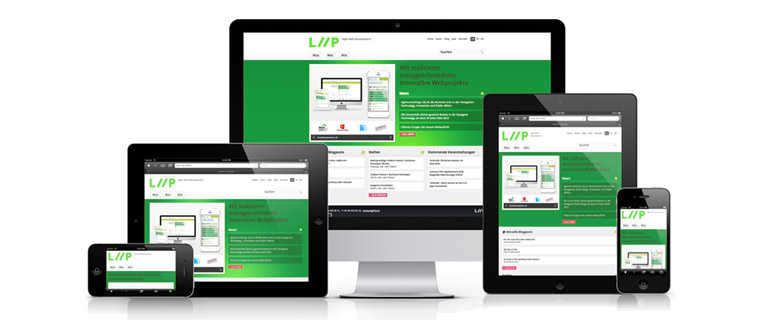

Responsive Design

Almost every new client these days wants a mobile version of their website. It’s practically essential after all: one design for the BlackBerry, another for the iPhone, the iPad, netbook, Kindle — and all screen resolutions must be compatible, too. In the next five years, we’ll likely need to design for a number of additional inventions. When will the madness stop? It won’t, of course.
In the field of Web design and development, we’re quickly getting to the point of being unable to keep up with the endless new resolutions and devices. For many websites, creating a website version for each resolution and new device would be impossible, or at least impractical. Should we just suffer the consequences of losing visitors from one device, for the benefit of gaining visitors from another? Or is there another option?
Responsive Web design is the approach that suggests that design and development should respond to the user’s behavior and environment based on screen size, platform and orientation. The practice consists of a mix of flexible grids and layouts, images and an intelligent use of CSS media queries. As the user switches from their laptop to iPad, the website should automatically switch to accommodate for resolution, image size and scripting abilities. In other words, the website should have the technology to automatically respond to the user’s preferences. This would eliminate the need for a different design and development phase for each new gadget on the market.
Adjusting Screen Resolution
With more devices come varying screen resolutions, definitions and orientations. New devices with new screen sizes are being developed every day, and each of these devices may be able to handle variations in size, functionality and even color. Some are in landscape, others in portrait, still others even completely square. As we know from the rising popularity of the iPhone, iPad and advanced smartphones, many new devices are able to switch from portrait to landscape at the user’s whim. How is one to design for these situations?
In addition to designing for both landscape and portrait (and enabling those orientations to possibly switch in an instant upon page load), we must consider the hundreds of different screen sizes. Yes, it is possible to group them into major categories, design for each of them, and make each design as flexible as necessary. But that can be overwhelming, and who knows what the usage figures will be in five years? Besides, many users do not maximize their browsers, which itself leaves far too much room for variety among screen sizes.
Flexible Images
One major problem that needs to be solved with responsive Web design is working with images. There are a number of techniques to resize images proportionately, and many are easily done. As long as no other width-based image styles override this rule, every image will load in its original size, unless the viewing area becomes narrower than the image’s original width. The maximum width of the image is set to 100% of the screen or browser width, so when that 100% becomes narrower, so does the image.
Custom Layout Structure
For extreme size changes, we may want to change the layout altogether, either through a separate style sheet or, more efficiently, through a CSS media query. This does not have to be troublesome; most of the styles can remain the same, while specific style sheets can inherit these styles and move elements around with floats, widths, heights and so on.
Showing or Hiding Content
It is possible to shrink things proportionally and rearrange elements as necessary to make everything fit (reasonably well) as a screen gets smaller. It’s great that that’s possible, but making every piece of content from a large screen available on a smaller screen or mobile device isn’t always the best answer. We have best practices for mobile environments: simpler navigation, more focused content, lists or rows instead of multiple columns.
Responsive Web design shouldn’t be just about how to create a flexible layout on a wide range of platforms and screen sizes. It should also be about the user being able to pick and choose content. Fortunately, CSS has been allowing us to show and hide content with ease for years!
Benefits of Responsive Web Design
- Increasing your reach to tablet and mobile audiences.
- Better User Experience.
- Increase sales and conversion rates .
- Increase your visibility in search engines.
- Save time and cost on mobile development.
- Save time and cost on site management.